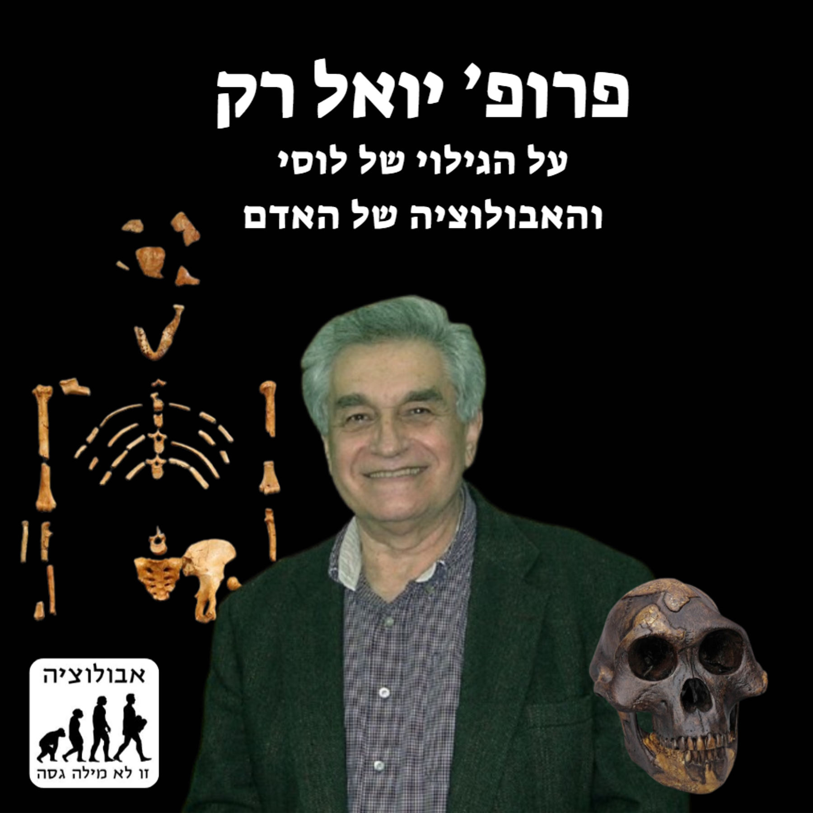

פרקי אורחים
שיחות עם חוקרים, רבנים, מחנכים והוגים, כל אחד מזווית אחרת על המפגש בין מדע לאמונה. לחצו על תמונת הפרק כדי לעבור לדף שלו.
#10הרב עזרא היימןהרב עזרא היימן- שיחה על תורה, מדע, זהות וחינוךדף הפרק בקרוב#14פרופ' נתן אביעזרפרופ' נתן אביעזר- איך תורת האבולוציה מסתדרת עם פרשת בראשיתדף הפרק בקרוב#32ד"ר מרב סיאניד"ר מרב סיאני- הוראת אבולוציה בישראל: אתגרים והתמודדויותדף הפרק בקרוב

#44פרופ' יואל רקפרופ' יואל רק- הגילוי של לוסי והאבולוציה של האדם#45ד"ר גלעד בינוד"ר גלעד בינו- האבולוציה והאקולוגיה של הפלטיפוסדף הפרק בקרוב#46פרופ' יוסי לשםפרופ' יוסי לשם- צפרות בישראל ושמירת טבע בציבור הדתידף הפרק בקרוב#47הרב ד"ר מיכאל אברהםהרב ד"ר מיכאל אברהם- אבולוציה ואמונה רציונלית ועל חשיבה ביקורתיתדף הפרק בקרוב#48פרופ' ראובן ישורוןפרופ' ראובן ישורון- יציאת הומו ספיינס מאפריקה ויישובי הקבע של התרבות הנטופיתדף הפרק בקרוב#50ד"ר נמרוד מרוםד"ר נמרוד מרום- החיות שנכחדו מהאזור ואלו שעלולות להיכחדדף הפרק בקרוב#67עדי מרקוזה הסעדי מרקוזה הס- שיחה עם מתרגמת ספרי מדע פופולרידף הפרק בקרוב#68הרב ד"ר משה רטהרב ד"ר משה רט- אמונה רציונליתדף הפרק בקרוב#74גלעד דביראיך השינה תעזור לכם לרדת במשקל? עם גלעד דביר דיאטן קליני ותזונאי ספורטדף הפרק בקרוב